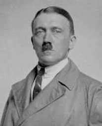

35 ADOLF HITLER 1889-1945
Terus
terang, saya masukkan Hitler ke dalam daftar urutan buku ini
dengan rasa muak. Pengaruhnya sepenuhnya bersifat jahanam
dan saya tak punya selera menghormati orang yang arti
pentingnya terletak pada penyebab kematian sekitar tiga
puluh lima juta manusia. Tetapi, tak ada jalan untuk
mengingkari kenyataan bahwa Hitler punya pengaruh yang luar
biasa terhadap orang-orang yang bukan main banyaknya.
Adolf Hitler lahir tahun 1889 di Braunau, Austria.
Sebagai remaja dia merupakan seorang seniman gagal yang
kapiran dan kadang-kadang dalam usia mudanya dia menjadi
seorang nasionalis Jerman yang fanatik. Di masa Perang Dunia
ke-I, dia masuk Angkatan Bersenjata Jerman, terluka dan
peroleh dua medali untuk keberaniannya.
Kekalahan Jerman membikinnya terpukul dan geram. Di tahun
1919 tatkala umurnya menginjak tiga puluh tahun, dia
bergabung dengan partai kecil berhaluan kanan di Munich, dan
segera partai ini mengubah nama menjadi Partai Buruh
Nasionalis Jerman (diringkas Nazi). Dalam tempo dua tahun
dia menanjak jadi pemimpin yang tanpa saingan yang dalam
julukan Jerman disebut "Fuehrer."
Di bawah kepemimpinan Hitler, partai Nazi dengan
kecepatan luar biasa menjadi suatu kekuatan dan di bulan
Nopember 1923 percobaan kupnya gagal. Kup itu terkenal
dengan sebutan "The Munich Beer Hall Putsch." Hitler
ditangkap, dituduh pengkhianat, dan terbukti bersalah.
Tetapi, dia dikeluarkan dari penjara sesudah mendekam di
sana kurang dari setahun.
Di tahun 1928 partai Nazi masih merupakan partai kecil.
Tetapi, depressi besar-besaran membikin rakyat tidak puas
dengan partai-partai politik yang besar dan sudah mapan.
Dalam keadaan seperti ini partai Nazi menjadi semakin kuat,
dan di bulan Januari 1933, tatkala umurnya empat puluh empat
tahun, Hitler menjadi Kanselir Jerman.
Dengan jabatan itu, Hitler dengan cepat dan cekatan
membentuk kediktatoran dengan menggunakan aparat pemerintah
melabrak semua golongan oposisi. Perlu dicamkan, proses ini
bukanlah lewat erosi kebebasan sipil dan hak-hak pertahankan
diri terhadap tuduhan-tuduhan kriminal, tetapi digarap
dengan sabetan kilat dan sering sekali partai Nazi tidak
ambil pusing dengan prosedur pengajuan di pengadilan
samasekali. Banyak lawan-lawan politik digebuki, bahkan
dibunuh langsung di tempat. Meski begitu, sebelum pecah
Perang Dunia ke-2, Hitler meraih dukungan sebagian terbesar
penduduk Jerman karena dia berhasil menekan jumlah
pengangguran dan melakukan perbaikan-perbaikan ekonomi.
Hitler kemudian merancang jalan menuju
penaklukan-penaklukan yang ujung-ujungnya membawa dunia ke
kancah Perang Dunia ke-2. Dia merebut daerah pertamanya
praktis tanpa lewat peperangan samasekali. Inggris dan
Perancis terkepung oleh pelbagai macam kesulitan ekonomi,
karena itu begitu menginginkan perdamaian sehingga mereka
tidak ambil pusing tatkala Hitler mengkhianati Persetujuan
Versailles dengan cara membangun Angkatan Bersenjata Jerman.
Begitu pula mereka tidak ambil peduli tatkala Hitler
menduduki dan memperkokoh benteng di Rhineland (1936), dan
demikian juga ketika Hitler mencaplok Austria (Maret 1938).
Bahkan mereka terima sambil manggut-manggut ketika Hitler
mencaplok Sudetenland, benteng pertahanan perbatasan
Cekoslowakia. Persetujuan internasional yang dikenal dengan
sebutan "Pakta Munich" yang oleh Inggris dan Perancis
diharapkan sebagai hasil pembelian "Perdamaian sepanjang
masa" dibiarkan terinjak-injak dan mereka bengong ketika
Hitler merampas sebagian Cekoslowakia beberapa bulan
kemudian karena Cekoslowakia samasekali tak berdaya. Pada
tiap tahap, Hitler dengan cerdik menggabung argumen
membenarkan tindakannya dengan ancaman bahwa dia akan perang
apabila hasratnya dianggap sepi, dan pada tiap tahap
negara-negara demokrasi merasa gentar dan mundur
melemah.
Tetapi, Inggris dan Perancis berketetapan hati
mempertahankan Polandia, sasaran Hitler berikutnya. Pertama
Hitler melindungi dirinya dengan jalan penandatangan pakta
"Tidak saling menyerang" bulan Agustus 1939 dengan Stalin
(hakekatnya perjanjian itu perjanjian agresi karena keduanya
bersepakat bagaimana membagi dua Polandia buat kepentingan
masing-masing). Sembilan hari kemudian, Jerman menyerang
Polandia dan enam belas hari sesudah itu Uni Soviet berbuat
serupa. Meskipun Inggris dan Perancis mengumumkan perang
terhadap Jerman, Polandia segera dapat ditaklukkan.
Tahun puncak kehebatan Hitler adalah tahun 1940. Bulan
April, Angkatan Bersenjatanya melabrak Denmark dan Norwegia.
Bulan Mei, dia menerjang Negeri Belanda, Belgia, dan
Luxemburg. Bulan Juni, Perancis tekuk lutut. Tetapi pada
tahun itu pula Inggris bertahan mati-matian terhadap
serangan udara Jerman-terkenal dengan julukan "Battle of
Britain" dan Hitler tak pernah sanggup menginjakkan kaki di
bumi Inggris.
Pasukan Jerman menaklukkan Yunani dan Yugoslavia di bulan
April 1941. Dan di bulan Juni tahun itu pula Hitler
merobek-robek "Perjanjian tidak saling menyerang" dengan Uni
Soviet dan membuka penyerbuan. Angkatan Bersenjata Jerman
dapat menduduki bagian yang amat luas wilayah Rusia tetapi
tak mampu melumpuhkannya secara total sebelum musim dingin.
Meski bertempur lawan Inggris dan Rusia, tak
tanggung-tanggung Hitler memaklumkan perang dengan Amerika
Serikat bulan Desember 1941 dan beberapa hari kemudian
Jepang melabrak Amerika Serikat, mengobrak-abrik pangkalan
Angkatan Lautnya di Pearl Harbor.
Di pertengahan tahun 1942 Jerman sudah menguasai bagian
terbesar wilayah Eropa yang tak pernah sanggup dilakukan
oleh siapa pun dalam sejarah. Tambahan pula, dia menguasai
Afrika Utara. Titik balik peperangan terjadi pada parohan
kedua tahun 1942 tatkala Jerman dikalahkan dalam pertempuran
rumit di El-Alamein di Mesir dan Stalingrad di Rusia.
Sesudah kemunduran ini, nasib baik yang tadinya memayungi
tentara Jerman angsur-berangsur secara tetap
meninggalkannya. Tetapi, kendati kekalahan Jerman tampaknya
tak terelakkan lagi, Hitler menolak menyerah. Bukannya dia
semakin takut, malahan meneruskan penggasakan selama lebih
dari dua tahun sesudah Stalingrad. Ujung cerita yang pahit
terjadi pada musim semi tahun 1945. Hitler bunuh diri di
Berlin tanggal 30 April dan tujuh hari sesudah itu Jerman
menyerah kalah.
Selama masa kuasa, Hitler terlibat dalam tindakan
pembunuhan massal yang tak ada tolok tandingannya dalam
sejarah. Dia seorang rasialis yang fanatik, spesial terhadap
orang Yahudi yang dilakukannya dengan penuh benci
meletup-letup. Secara terbuka dia mengumumkan bunuh tiap
orang Yahudi di dunia. Di masa pemerintahannya, Nazi
membangun kampkamp pengasingan besar, dilengkapi dengan
kamar gas. Di tiap daerah yang menjadi wilayah kekuasaannya,
orang-orang tak bersalah, lelaki dan perempuan serta
anak-anak digiring dan dijebloskan ke dalam gerbong ternak
untuk selanjutnya dicabut nyawanya di kamar-kamar gas. Dalam
jangka waktu hanya beberapa tahun saja sekitar 6.000.000
Yahudi dipulangkan ke alam baka.
Yahudi bukan satu-satunya golongan yang jadi korban
Hitler. Di masa pemerintahan kediktatorannya, orang-orang
Rusia dan Gypsy juga dibabat, seperti juga halnya menimpa
orang-orang yang dianggap termasuk ras rendah atau
musuh-musuh negara. Jangan sekali-kali dibayangkan
pembunuhan ini dilakukan secara spontan, atau dalam keadaan
panas dan sengitnya peperangan. Melainkan Hitler membangun
kamp mautt itu dengan organisasi yang rapi dan cermat
seakan-akan dia merancang sebuah perusahaan bisnis besar.
Data-data tersusun, jumlah ditetapkan, dan mayat-mayat
secara sistematis dipreteli anggota-anggota badannya yang
berharga seperti gigi emas dan cincin kawin. Juga banyak
dari jenazah-jenazah itu dimanfaatkan buat pabrik sabun.
Begitu telitinya rencana pembunuhan oleh Hitler hingga
bahkan di akhir-akhir perang akan selesai, tatkala Jerman
kekurangan bahan-bahan buat penggunaan baik sipil maupun
militer, gerbong ternak masih terus menggelinding menuju
kamp-kamp pembunuhan dalam rangka missi teror
non-militer.
Dalam banyak hal, jelas sekali kemasyhuran Hitler akan
tamat. Pertama, dia oleh dunia luas dianggap manusia yang
paling jahanam sepanjang sejarah. Jika orang seperti Nero
dan Caligula yang salah langkahnya amat tidak berarti jika
dibanding Hitler dan Hitler masih saja tetap jadi lambang
kekejaman selama 20 abad, tampaknya tak melesetlah jika
orang meramalkan bahwa Hitler yang begitu buruk reputasinya
tak terlawankan dalam sejarah akan dikenang orang untuk
berpuluh-puluh abad lamanya.
Pemandangan di kamp konsentrasi di
Buchenwald
Lebih dari itu, tentu saja, Hitler akan dikenang sebagai
biang keladi pecahnya Perang Dunia ke-2, perang terbesar
yang pernah terjadi di atas bumi. Kemajuan persenjataan
nuklir seakan merupakan kemustahilan akan terjadi perang
yang berskala luas di masa depan. Karena itu, bahkan dua
atau tiga ribu tahun lagi dari sekarang, Perang Dunia ke-2
mungkin masih dianggap kejadian besar dalam sejarah.
Lebih jauh lagi, Hitler akan tetap terkenal karena
seluruh kisah menyangkut dirinya begitu menyeramkan dan
menarik, betapa seorang asing (Hitler dilahirkan di Austria,
bukan Jerman), betapa seorang yang tak punya pengalaman
politik samasekali, tak punya duit, tak punya hubungan
politik, mampu --dalam masa kurang dari empat belas tahun--
menjadi pemimpin kekuatan dunia yang menonjol,
sungguh-sungguh mengagumkan. Kemampuannya selaku orator
betul-betul luar biasa. Diukur dari kemampuannya
menggerakkan massa dalam tindakan-tindakan penting, bisa
dikatakan bahwa Hitler merupakan seorang orator terbesar
dalam sejarah. Akhirnya, cara kotor yang mengangkatnya ke
puncak kekuasaan, sekali terpegang tangannya tak akan cepat
terlupakan.
Mungkin tak ada tokoh dalam sejarah yang punya pengaruh
begitu besar terhadap generasinya ketimbang Adolf Hitler. Di
samping puluhan juta orang yang mati dalam peperangan yang
dia biang keladinya, atau mereka yang mati di kamp
konsentrasi, masih berjuta juta orang terlunta-lunta tanpa
tempat bernaung atau yang hidupnya berantakan akibat
perang.
Perkiraan lain mengenai pengaruh Hitler harus
mempertimbangkan dua faktor. Pertama, banyak yang
betul-betul terjadi di bawah kepemimpinannya tak akan pernah
terjadi andaikata tanpa Hitler. (Dalam kaitan ini dia amat
berbeda dengan tokoh-tokoh seperti Charles Darwin atau Simon
Bolivar). Tentu saja benar bahwa situasi di Jerman dan Eropa
menyediakan kesempatan buat Hitler. Gairah kemiliterannya
dan anti Yahudinya, misalnya, memang memukau para
pendengamya. Tak tampak tanda-tanda, misalnya, bahwa umumnya
bangsa Jerman di tahun 1920-an atau 1930-an bermaksud punya
pemerintahan seperti yang digerakkan oleh Hitler, dan
sedikit sekali tanda-tanda bahwa pemuka-pemuka Jerman
lainnya akan berbuat serupa Hitler. Apa yang dilakukan
Hitler sedikit pun tak pernah diduga akan terjadi oleh para
pengamat.
Kedua, seluruh gerakan Nazi dikuasai oleh seorang
pemimpin hingga ke tingkat yang luar biasa. Marx, Lenin,
Stalin dan lain-lain pemimpin sama-sama punya peranan
terhadap tumbuhnya Komunisme. Tetapi, Nasional Sosialisme
tak punya pemimpin penting sebelum munculnya Hitler, begitu
pula tak ada sesudahnya. Hitler memimpin partai itu ke
puncak kekuasaan dan tetap berada di puncak. Ketika dia
mati, partai Nazi dan pemerintahan yang dipimpinnya mati
bersamanya.
Tetapi, meski pengaruh Hitler terhadap generasinya begitu
besar, akibat dari tindakan-tindakannya di masa depan
tampaknya tidaklah seberapa besar. Hitler boleh dibilang
gagal total merampungkan sasaran cita-cita yang mana pun,
dan akibat-akibat yang tampak pada generasi berikutnya malah
kebalikannya dari apa yang ia kehendaki. Misalnya, Hitler
bermaksud menyebarkan pengaruh Jerman serta wilayah
kekuasaan Jerman. Tetapi, daerah-daerah taklukannya, meski
teramat luas, hanyalah bersifat singkat dan sementara. Dan
kini bahkan Jerman Barat dan Jerman Timur jika digabung jadi
satu masih lebih kecil ketimbang Republik Jerman tatkala
Hitler jadi kepala pemerintahan.
Adalah dorongan nafsu Hitler ingin membantai Yahudi.
Tetapi lima belas tahun sesudah Hitler berkuasa, sebuah
negara Yahudi merdeka berdiri untuk pertama kalinya setelah
2000 tahun. Hitler membenci baik Komunisme maupun Uni
Soviet. Tetapi, sesudah matinya dan sebagian disebabkan oleh
perang yang dimulainya, Rusia malahan memperluas daerah
kekuasaannya di wilayah yang luas di Eropa Timur dan
pengaruh Komunisme di dunia malahan semakin berkembang.
Hitler menggencet demokrasi malahan bermaksud
menghancurkannya, bukan saja di negeri lain melainkan di
Jerman sendiri. Namun, Jerman Barat sekarang menjadi negeri
yang menjalankan demokrasi dan penduduknya kelihatan lebih
membenci kediktatoran dari generasi yang mana pun sebelum
masa Hitler.
Tentara Nazi di tahun 1933
Apakah sebabnya terjadi kombinasi yang aneh dari
pengaruhnya yang luar biasa besar pada saat dia berkuasa
dengan pengaruhnya yang begitu mini pada generasi
sesudahnya? Akibat-akibat yang ditimbulkan Hitler pada saat
hidupnya begitu luar biasa besar sehingga nyatalah Hitler
memang layak ditempatkan di urutan agak tinggi dalam daftar
buku ini.
Kendati begitu, tentu saja dia mesti ditempatkan di bawah
tokoh-tokoh seperti Shih Huang Ti, Augustus Caesar dan
Jengis Khan yang perbuatannya mempengaruhi dunia yang
berdaya jangkau jauh sesudah matinya. Yang nyaris sejajar
kedudukannya dengan Hitler adalah Napoleon dan Alexander
Yang Agung. Dalam masa yang begitu singkat, Hitler dapat
mengobrak-abrik dunia jauh lebih parah dari kedua orang itu.
Hitler ditempatkan di bawah urutan mereka karena mereka
punya pengaruh yang lebih lama.
Situs Web
- http://www.dhm.de/lemo/html/biografien/HitlerAdolf/
- http://www.bbc.co.uk/history/historic_figures/hitler_adolf.shtml
- http://projects.brg-schoren.ac.at/nationalsozialismus/hitler.html
- http://london.iwm.org.uk/server/show/ConWebDoc.1454
- http://www.historyguide.org/europe/hitler.html
- http://www.nalanda.nitc.ac.in/resources/english/etext-project/Biography/hitler/leftframe.html
|